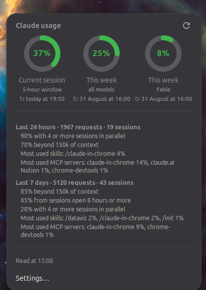
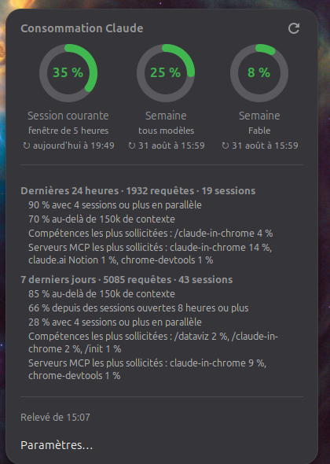

The limit, before
you hit it.
A GNOME Shell indicator for your Claude Code usage: a ring in the top bar for the current five-hour window, and on click the whole picture — the weekly limits, when each one resets, and what is driving your consumption.
The real thing, rebuilt here in the browser — click the indicator to close and reopen the menu, or the refresh arrow to take another reading. The colours are the ones the extension draws: green, then amber, then orange, then red.
Three limits run at once. None of them is visible while you work.
A Claude Code subscription is not one counter but three: a sliding five-hour window, a weekly
limit across all models, and a weekly limit on the most expensive one. Each has its own
percentage and its own reset time — and until now, reading them meant stopping what you were
doing to type /usage in an open session. This extension asks in your place, every
five minutes, and puts the answer in the top bar.
The account’s own figures
They come from claude -p "/usage" — the very command you would type in a session. Not tokens re-added from local logs, not an estimate that drifts from what the account shows.
No API key, no token spent
The extension never reads ~/.claude/.credentials.json and never talks to Anthropic itself. The CLI does, with the session you already have — so there is nothing to configure and nothing to renew.
The reset times, in words
Aug 27, 7:50pm (Europe/Paris) becomes today at 19:50, or Monday at 16:00 — in your language, in your clock format, next to the gauge it belongs to.
And what is driving it
The menu also carries the CLI’s own breakdown: requests and sessions over the last 24 hours and 7 days, how much of it ran in parallel, how much went beyond 150k of context, the skills and MCP servers that weighed most.
It never blocks the shell
A reading takes about five seconds, so it is asynchronous from end to end, spaced out by default, cut off after sixty seconds if the CLI hangs, and abandoned outright if you disable the extension mid-read.
In your language
The CLI answers in English whatever your locale. The extension parses that English and re-renders it in yours — and a sentence it does not recognise is shown as it came rather than mangled.
One click, or one clone.
Two routes to the same extension. Both end with a log out and back in — GNOME Shell only picks up a newly added extension at startup, and on Wayland it cannot be restarted in place.
From extensions.gnome.org
The one-click route: the toggle on the extension’s page, once the listing has cleared review. Until a GNOME reviewer has looked at it the listing reads Unreviewed, and the site marks it incompatible with every shell version — which is about the review, not about your machine.
From source, which works right now
$ git clone https://github.com/SalvadorCardona/gnome-claude-usage $ cd gnome-claude-usage $ ./install.sh $ gnome-extensions enable claude-usage@salvadorcardona.github.io
install.sh compiles the settings schema and the French catalogue, then symlinks each
file into ~/.local/share/gnome-shell/extensions/. Editing the clone is therefore enough to
change the installed extension — there is no second copy to keep in step.
Then log out and back in. Nothing before that point will show the indicator, and it is the one step no script can take for you.
What it needs
- GNOME Shell 48, 49 or 50, on Wayland or X11;
- the
claudeCLI installed and signed in — found onPATH, then at~/.local/bin/claude, then~/.claude/local/claude. Without it the menu says so, rather than showing a wrong number; python3andglib-compile-schemasfor the install script — both already present on a normal GNOME desktop.
A ring rather than a pie, and four colours rather than one.
At sixteen pixels in the top bar a partly filled disc is unreadable, while an arc compares itself at a glance to the full circle behind it. It sweeps clockwise from noon, and its colour is chosen to warn you, not to alarm you: amber arrives at half, red only when there is little left.
| Filled | Colour | What it is telling you |
|---|---|---|
| under 50 % | #40b84f green | plenty of room. Start the big task. |
| 50 – 79 % | #d19921 amber | past half. Worth knowing before a long run. |
| 80 – 94 % | #f08740 orange | the end of the window is close; check the reset time. |
| 95 % and over | #f7524a red | whatever you start now will probably be cut short. |
| no reading | grey, empty | the CLI is missing or did not answer — never a number that might be wrong. |
Which of the three limits the ring stands for is yours to choose: the current session by default, either weekly limit, or whichever is highest — the one closest to stopping you, whichever that happens to be today. The percentage next to it can be turned off; the ring alone reads well enough from the corner of the eye.
The CLI is the source, and that choice has consequences.
Going through claude -p "/usage" rather than the API is the decision the whole extension is built around. It is worth knowing what it buys and what it costs.
$ claude -p "/usage" Current session: 37% used · resets Aug 27, 7:50pm (Europe/Paris) Current week (all models): 25% used · resets Sep 1, 4:00pm (Europe/Paris) Current week (Fable): 8% used · resets Sep 1, 4:00pm (Europe/Paris)
- Nothing to authenticate. The token stays in the CLI’s hands. There is no key to paste into the settings, and nothing to rotate when it expires.
- About five seconds per reading, which is exactly why it is spaced out and strictly asynchronous. A hung network is cut off after sixty seconds, and a reading in flight is cancelled when you change a setting or disable the extension.
- Its own empty working directory.
claudefiles a session per directory it is run from, so readings are taken in~/.cache/claude-usage-indicatorrather than scattering sessions through your home. - The wording is not a contract. The CLI’s sentences are not a documented interface and may change; every one the extension fails to recognise is displayed verbatim rather than dropped or guessed at.
Four of them, and the defaults are the answer for most people.
| Setting | Default | What it does |
|---|---|---|
| Limit shown | Current session | Which of the three limits the top bar ring stands for — or whichever is highest. |
| Show the percentage | on | The figure next to the ring. Off leaves the ring alone. |
| Refresh interval | 300 s | Between two readings, from 60 s to an hour. The menu also refreshes on opening if the last reading is over a minute old. |
Path to the claude binary | auto | PATH, then ~/.local/bin/claude, then ~/.claude/local/claude. Set it by hand if yours lives elsewhere. |
$ gnome-extensions prefs claude-usage@salvadorcardona.github.io
English in, your locale out.
The same menu, on two machines set to two languages. Everything the extension writes — the limit names, the reset times, the breakdown lines — goes through a translation layer that takes English from the CLI and gives back the language of the session.


Adding a language
po/fr.po is the French catalogue; copy it to yours, translate, and compile:
$ python3 tools/po2mo.py po/xx.po locale/xx/LC_MESSAGES/claude-usage.mo
tools/po2mo.py exists because msgfmt is not installed on a default Ubuntu —
use msgfmt instead if you have it. Pull requests with a new catalogue are welcome.
Six files, and the one that matters is testable.
Plain GJS, no build step, no dependency: what you clone is what the shell runs.
format.js takes its translator as an argument instead of importing gettext. That is what
lets its rules be exercised outside the shell, where resource:/// modules do not exist —
and since the CLI’s sentences are the part most likely to change, that is precisely the part worth
being able to test.